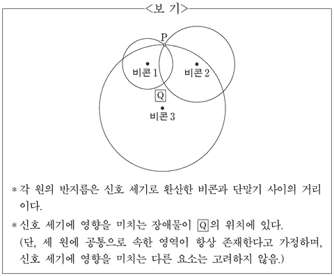

위치 측정
지문을 먼저 읽고, 이해가 막히는 문단에서 ‘그림으로 보기’를 누르세요. 그림은 문단을 따라 바뀝니다.
1문단스마트폰은 다양한 위치 측정 기술을 활용하여 여러 지형 환경에서 위치를 측정한다. 위치에는 절대 위치와 상대 위치가 있다. 절대 위치는 위도, 경도 등으로 표시된 위치이고, 상대 위치는 특정한 위치를 기준으로 한 상대적인 위치이다.
2문단실외에서는 주로 스마트폰 단말기에 내장된 GPS(위성항법장치)나 IMU(관성측정장치)를 사용한다. GPS는 위성으로부터 오는 신호를 이용하여 절대 위치를 측정한다. GPS는 위치 오차가 시간에 따라 누적되지 않는다. 그러나 전파 지연 등으로 접속 초기에 짧은 시간 동안이지만 큰 오차가 발생하고 실내나 터널 등에서는 GPS 신호를 받기 어렵다. IMU는 내장된 센서로 가속도와 속도를 측정하여 위치 변화를 계산하고 초기 위치를 기준으로 하는 상대 위치를 구한다. 단기간 움직임에 대한 측정 성능이 뛰어나지만 센서가 측정한 값의 오차가 누적되기 때문에 시간이 지날수록 위치 오차가 커진다. 이 두 방식을 함께 사용하면 서로의 단점을 보완하여 오차를 줄일 수 있다.
3문단한편 실내에서 위치 측정에 사용 가능한 방법으로는 블루투스 기반의 비콘을 활용하는 기술이 있다. 비콘은 실내에 고정 설치되어 비콘마다 정해진 식별 번호와 위치 정보가 포함된 신호를 주기적으로 보내는 기기이다. 비콘들은 동일한 세기의 신호를 사방으로 보내지만 비콘으로부터 거리가 멀어질수록, 벽과 같은 장애물이 많을수록 신호의 세기가 약해진다. 단말기가 비콘 신호의 도달 거리 내로 진입하면 단말기 안의 수신기가 이 신호를 인식한다. 이 신호를 이용하여 2차원 평면에서의 위치를 측정하는 방법으로는 다음과 같은 것들이 있다.
4문단근접성 기법은 단말기가 비콘 신호를 수신하면 해당 비콘의 위치를 단말기의 위치로 정한다. 여러 비콘 신호를 수신했을 경우에는 신호가 가장 강한 비콘의 위치를 단말기의 위치로 정한다.
5문단삼변측량 기법은 3개 이상의 비콘으로부터 수신된 신호 세기를 측정하여 단말기와 비콘 사이의 거리로 환산한다. 각 비콘을 중심으로 이 거리를 반지름으로 하는 원을 그리고, 그 교점을 단말기의 현재 위치로 정한다. 교점이 하나로 모이지 않는 경우에는 세 원에 공통으로 속한 영역의 중심점을 단말기의 위치로 측정한다.
6문단㉠위치 지도 기법은 측정 공간을 작은 구역들로 나누어 각 구역마다 기준점을 설정하고 그 주위에 비콘들을 설치한다. 그러고 나서 비콘들이 송신하여 각 기준점에 도달하는 신호의 세기를 측정한다. 이 신호 세기와 비콘의 식별 번호, 기준점의 위치 좌표를 서버에 있는 데이터베이스에 위치 지도로 기록해 놓는다. 이 작업을 모든 기준점에서 수행한다. 특정한 위치에 도달한 단말기가 비콘 신호를 수신하면 신호 세기를 측정한 뒤 비콘의 식별 번호와 함께 서버로 전송한다. 서버는 수신된 신호 세기와 가장 가까운 신호 세기를 갖는 기준점을 데이터베이스에서 찾아 이 기준점의 위치를 단말기에 알려 준다.
<보기>는 단말기가 3개의 비콘 신호를 받은 상태를 도식화한 것이다. 윗글을 바탕으로 <보기>를 이해한 내용으로 적절한 것은? [3점]
